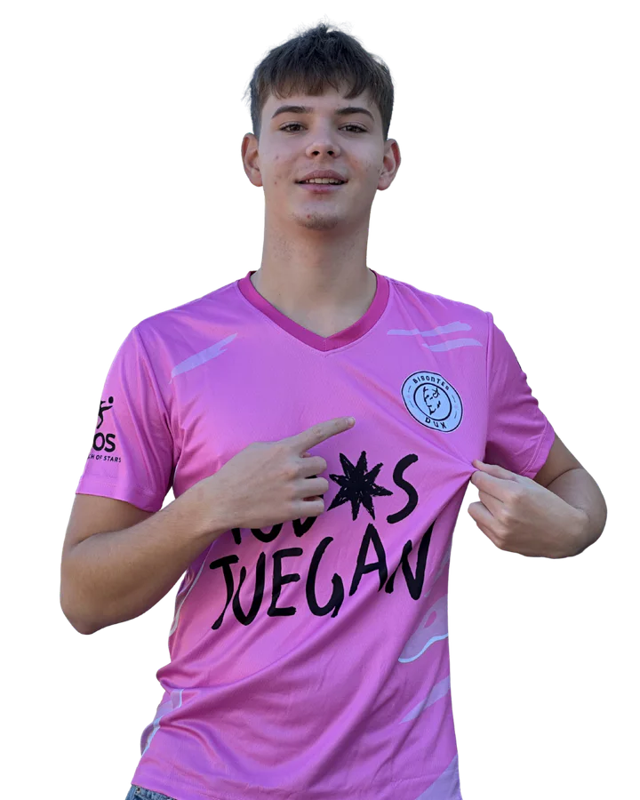

Filip Gabriel Tekiela
Cdelantero centro · Dorsal 10
Filip ha estado con el Bisontes desde el principio y es uno de los que ayudó a la dirección del club a formarlo desde cero. Es nuestro capitán, un delantero con mucha calidad. Ha ganado dos títulos con Ben y José, y llegó a marcar en Segunda Regional siendo cadete. Es rápido, fuerte y alto, y le pega bien con ambas piernas y de cabeza. Tenemos muchas ganas de que vuelva a liderar al equipo como bien sabe hacer.
- Equipo
- Bisontes DUX
- Función
- DELANTERO CENTRO
- Capitán
- Sí
- Dorsal
- 10
- Nacionalidad

Trayectoria
- Malasaña
- Factory FC
- 25/26–actualidad · Bisontes DUX